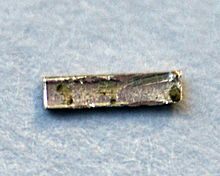

Radium
|  | |||||||||||||||||||||||||||||||||||||||||||||||||||||||||||||||||||||||||||||||||||||||||||||||||||||||||||||||||||||||||||||||||||||||||||||||||||||||||||||||||||||||||||||||||||||||||||||||||||||||||||||||||||||||||||||||||||||
| General properties | |||||||||||||||||||||||||||||||||||||||||||||||||||||||||||||||||||||||||||||||||||||||||||||||||||||||||||||||||||||||||||||||||||||||||||||||||||||||||||||||||||||||||||||||||||||||||||||||||||||||||||||||||||||||||||||||||||||
|---|---|---|---|---|---|---|---|---|---|---|---|---|---|---|---|---|---|---|---|---|---|---|---|---|---|---|---|---|---|---|---|---|---|---|---|---|---|---|---|---|---|---|---|---|---|---|---|---|---|---|---|---|---|---|---|---|---|---|---|---|---|---|---|---|---|---|---|---|---|---|---|---|---|---|---|---|---|---|---|---|---|---|---|---|---|---|---|---|---|---|---|---|---|---|---|---|---|---|---|---|---|---|---|---|---|---|---|---|---|---|---|---|---|---|---|---|---|---|---|---|---|---|---|---|---|---|---|---|---|---|---|---|---|---|---|---|---|---|---|---|---|---|---|---|---|---|---|---|---|---|---|---|---|---|---|---|---|---|---|---|---|---|---|---|---|---|---|---|---|---|---|---|---|---|---|---|---|---|---|---|---|---|---|---|---|---|---|---|---|---|---|---|---|---|---|---|---|---|---|---|---|---|---|---|---|---|---|---|---|---|---|---|---|---|---|---|---|---|---|---|---|---|---|---|---|---|---|---|---|
| Name, symbol | radium, Ra | ||||||||||||||||||||||||||||||||||||||||||||||||||||||||||||||||||||||||||||||||||||||||||||||||||||||||||||||||||||||||||||||||||||||||||||||||||||||||||||||||||||||||||||||||||||||||||||||||||||||||||||||||||||||||||||||||||||
| Pronunciation | /ˈreɪdiəm/ RAY-dee-əm |
||||||||||||||||||||||||||||||||||||||||||||||||||||||||||||||||||||||||||||||||||||||||||||||||||||||||||||||||||||||||||||||||||||||||||||||||||||||||||||||||||||||||||||||||||||||||||||||||||||||||||||||||||||||||||||||||||||
| Appearance | silvery white metallic | ||||||||||||||||||||||||||||||||||||||||||||||||||||||||||||||||||||||||||||||||||||||||||||||||||||||||||||||||||||||||||||||||||||||||||||||||||||||||||||||||||||||||||||||||||||||||||||||||||||||||||||||||||||||||||||||||||||
| Radium in the periodic table | |||||||||||||||||||||||||||||||||||||||||||||||||||||||||||||||||||||||||||||||||||||||||||||||||||||||||||||||||||||||||||||||||||||||||||||||||||||||||||||||||||||||||||||||||||||||||||||||||||||||||||||||||||||||||||||||||||||
|
|||||||||||||||||||||||||||||||||||||||||||||||||||||||||||||||||||||||||||||||||||||||||||||||||||||||||||||||||||||||||||||||||||||||||||||||||||||||||||||||||||||||||||||||||||||||||||||||||||||||||||||||||||||||||||||||||||||
| Atomic number | 88 | ||||||||||||||||||||||||||||||||||||||||||||||||||||||||||||||||||||||||||||||||||||||||||||||||||||||||||||||||||||||||||||||||||||||||||||||||||||||||||||||||||||||||||||||||||||||||||||||||||||||||||||||||||||||||||||||||||||
| Standard atomic weight | (226) | ||||||||||||||||||||||||||||||||||||||||||||||||||||||||||||||||||||||||||||||||||||||||||||||||||||||||||||||||||||||||||||||||||||||||||||||||||||||||||||||||||||||||||||||||||||||||||||||||||||||||||||||||||||||||||||||||||||
| Element category | alkaline earth metal | ||||||||||||||||||||||||||||||||||||||||||||||||||||||||||||||||||||||||||||||||||||||||||||||||||||||||||||||||||||||||||||||||||||||||||||||||||||||||||||||||||||||||||||||||||||||||||||||||||||||||||||||||||||||||||||||||||||
| Group, block | group 2 (alkaline earth metals), s-block | ||||||||||||||||||||||||||||||||||||||||||||||||||||||||||||||||||||||||||||||||||||||||||||||||||||||||||||||||||||||||||||||||||||||||||||||||||||||||||||||||||||||||||||||||||||||||||||||||||||||||||||||||||||||||||||||||||||
| Period | period 7 | ||||||||||||||||||||||||||||||||||||||||||||||||||||||||||||||||||||||||||||||||||||||||||||||||||||||||||||||||||||||||||||||||||||||||||||||||||||||||||||||||||||||||||||||||||||||||||||||||||||||||||||||||||||||||||||||||||||
| Electron configuration | [Rn] 7s2 | ||||||||||||||||||||||||||||||||||||||||||||||||||||||||||||||||||||||||||||||||||||||||||||||||||||||||||||||||||||||||||||||||||||||||||||||||||||||||||||||||||||||||||||||||||||||||||||||||||||||||||||||||||||||||||||||||||||
| per shell | 2, 8, 18, 32, 18, 8, 2 | ||||||||||||||||||||||||||||||||||||||||||||||||||||||||||||||||||||||||||||||||||||||||||||||||||||||||||||||||||||||||||||||||||||||||||||||||||||||||||||||||||||||||||||||||||||||||||||||||||||||||||||||||||||||||||||||||||||
| Physical properties | |||||||||||||||||||||||||||||||||||||||||||||||||||||||||||||||||||||||||||||||||||||||||||||||||||||||||||||||||||||||||||||||||||||||||||||||||||||||||||||||||||||||||||||||||||||||||||||||||||||||||||||||||||||||||||||||||||||
| Phase | solid | ||||||||||||||||||||||||||||||||||||||||||||||||||||||||||||||||||||||||||||||||||||||||||||||||||||||||||||||||||||||||||||||||||||||||||||||||||||||||||||||||||||||||||||||||||||||||||||||||||||||||||||||||||||||||||||||||||||
| Melting point | 1233 K (960 °C, 1760 °F) (disputed) | ||||||||||||||||||||||||||||||||||||||||||||||||||||||||||||||||||||||||||||||||||||||||||||||||||||||||||||||||||||||||||||||||||||||||||||||||||||||||||||||||||||||||||||||||||||||||||||||||||||||||||||||||||||||||||||||||||||
| Boiling point | 2010 K (1737 °C, 3159 °F) | ||||||||||||||||||||||||||||||||||||||||||||||||||||||||||||||||||||||||||||||||||||||||||||||||||||||||||||||||||||||||||||||||||||||||||||||||||||||||||||||||||||||||||||||||||||||||||||||||||||||||||||||||||||||||||||||||||||
| Density near r.t. | 5.5 g·cm−3 | ||||||||||||||||||||||||||||||||||||||||||||||||||||||||||||||||||||||||||||||||||||||||||||||||||||||||||||||||||||||||||||||||||||||||||||||||||||||||||||||||||||||||||||||||||||||||||||||||||||||||||||||||||||||||||||||||||||
| Heat of fusion | 8.5 kJ·mol−1 | ||||||||||||||||||||||||||||||||||||||||||||||||||||||||||||||||||||||||||||||||||||||||||||||||||||||||||||||||||||||||||||||||||||||||||||||||||||||||||||||||||||||||||||||||||||||||||||||||||||||||||||||||||||||||||||||||||||
| Heat of vaporization | 113 kJ·mol−1 | ||||||||||||||||||||||||||||||||||||||||||||||||||||||||||||||||||||||||||||||||||||||||||||||||||||||||||||||||||||||||||||||||||||||||||||||||||||||||||||||||||||||||||||||||||||||||||||||||||||||||||||||||||||||||||||||||||||
vapor pressure
|
|||||||||||||||||||||||||||||||||||||||||||||||||||||||||||||||||||||||||||||||||||||||||||||||||||||||||||||||||||||||||||||||||||||||||||||||||||||||||||||||||||||||||||||||||||||||||||||||||||||||||||||||||||||||||||||||||||||
| Atomic properties | |||||||||||||||||||||||||||||||||||||||||||||||||||||||||||||||||||||||||||||||||||||||||||||||||||||||||||||||||||||||||||||||||||||||||||||||||||||||||||||||||||||||||||||||||||||||||||||||||||||||||||||||||||||||||||||||||||||
| Oxidation states | 2 (expected to have a strongly basic oxide) | ||||||||||||||||||||||||||||||||||||||||||||||||||||||||||||||||||||||||||||||||||||||||||||||||||||||||||||||||||||||||||||||||||||||||||||||||||||||||||||||||||||||||||||||||||||||||||||||||||||||||||||||||||||||||||||||||||||
| Electronegativity | Pauling scale: 0.9 | ||||||||||||||||||||||||||||||||||||||||||||||||||||||||||||||||||||||||||||||||||||||||||||||||||||||||||||||||||||||||||||||||||||||||||||||||||||||||||||||||||||||||||||||||||||||||||||||||||||||||||||||||||||||||||||||||||||
| Ionization energies | 1st: 509.3 kJ·mol−1 2nd: 979.0 kJ·mol−1 |
||||||||||||||||||||||||||||||||||||||||||||||||||||||||||||||||||||||||||||||||||||||||||||||||||||||||||||||||||||||||||||||||||||||||||||||||||||||||||||||||||||||||||||||||||||||||||||||||||||||||||||||||||||||||||||||||||||
| Covalent radius | 221±2 pm | ||||||||||||||||||||||||||||||||||||||||||||||||||||||||||||||||||||||||||||||||||||||||||||||||||||||||||||||||||||||||||||||||||||||||||||||||||||||||||||||||||||||||||||||||||||||||||||||||||||||||||||||||||||||||||||||||||||
| Van der Waals radius | 283 pm | ||||||||||||||||||||||||||||||||||||||||||||||||||||||||||||||||||||||||||||||||||||||||||||||||||||||||||||||||||||||||||||||||||||||||||||||||||||||||||||||||||||||||||||||||||||||||||||||||||||||||||||||||||||||||||||||||||||
| Miscellanea | |||||||||||||||||||||||||||||||||||||||||||||||||||||||||||||||||||||||||||||||||||||||||||||||||||||||||||||||||||||||||||||||||||||||||||||||||||||||||||||||||||||||||||||||||||||||||||||||||||||||||||||||||||||||||||||||||||||
| Crystal structure | body-centered cubic (bcc)
 |
||||||||||||||||||||||||||||||||||||||||||||||||||||||||||||||||||||||||||||||||||||||||||||||||||||||||||||||||||||||||||||||||||||||||||||||||||||||||||||||||||||||||||||||||||||||||||||||||||||||||||||||||||||||||||||||||||||
| Thermal conductivity | 18.6 W·m−1·K−1 | ||||||||||||||||||||||||||||||||||||||||||||||||||||||||||||||||||||||||||||||||||||||||||||||||||||||||||||||||||||||||||||||||||||||||||||||||||||||||||||||||||||||||||||||||||||||||||||||||||||||||||||||||||||||||||||||||||||
| Electrical resistivity | 1 µΩ·m (at 20 °C) | ||||||||||||||||||||||||||||||||||||||||||||||||||||||||||||||||||||||||||||||||||||||||||||||||||||||||||||||||||||||||||||||||||||||||||||||||||||||||||||||||||||||||||||||||||||||||||||||||||||||||||||||||||||||||||||||||||||
| Magnetic ordering | nonmagnetic | ||||||||||||||||||||||||||||||||||||||||||||||||||||||||||||||||||||||||||||||||||||||||||||||||||||||||||||||||||||||||||||||||||||||||||||||||||||||||||||||||||||||||||||||||||||||||||||||||||||||||||||||||||||||||||||||||||||
| CAS Registry Number | 7440-14-4 | ||||||||||||||||||||||||||||||||||||||||||||||||||||||||||||||||||||||||||||||||||||||||||||||||||||||||||||||||||||||||||||||||||||||||||||||||||||||||||||||||||||||||||||||||||||||||||||||||||||||||||||||||||||||||||||||||||||
| History | |||||||||||||||||||||||||||||||||||||||||||||||||||||||||||||||||||||||||||||||||||||||||||||||||||||||||||||||||||||||||||||||||||||||||||||||||||||||||||||||||||||||||||||||||||||||||||||||||||||||||||||||||||||||||||||||||||||
| Discovery | Pierre Curie and Marie Curie (1898) | ||||||||||||||||||||||||||||||||||||||||||||||||||||||||||||||||||||||||||||||||||||||||||||||||||||||||||||||||||||||||||||||||||||||||||||||||||||||||||||||||||||||||||||||||||||||||||||||||||||||||||||||||||||||||||||||||||||
| First isolation | Marie Curie (1910) | ||||||||||||||||||||||||||||||||||||||||||||||||||||||||||||||||||||||||||||||||||||||||||||||||||||||||||||||||||||||||||||||||||||||||||||||||||||||||||||||||||||||||||||||||||||||||||||||||||||||||||||||||||||||||||||||||||||
| Most stable isotopes | |||||||||||||||||||||||||||||||||||||||||||||||||||||||||||||||||||||||||||||||||||||||||||||||||||||||||||||||||||||||||||||||||||||||||||||||||||||||||||||||||||||||||||||||||||||||||||||||||||||||||||||||||||||||||||||||||||||
|
|||||||||||||||||||||||||||||||||||||||||||||||||||||||||||||||||||||||||||||||||||||||||||||||||||||||||||||||||||||||||||||||||||||||||||||||||||||||||||||||||||||||||||||||||||||||||||||||||||||||||||||||||||||||||||||||||||||
{kind=link}
Radium is a chemical element with symbol Ra and atomic number 88. It is the sixth element in group 2 of the periodic table, also known as the alkaline earth metals. Pure radium is almost colorless, but it readily combines with nitrogen on exposure to air, forming a black surface layer. All isotopes of radium are highly radioactive, with the most stable isotope being radium-226, which has a half-life of 1600 years and decays into radon gas. When radium decays, ionizing radiation is a product, which can excite fluorescent chemicals and cause radioluminescence.
Radium, in the form of radium chloride, was discovered by Marie Curie and Pierre Curie in 1898. They extracted the radium compound from uraninite and published the discovery at the French Academy of Sciences five days later. Radium was isolated in its metallic state by Marie Curie and André-Louis Debierne through the electrolysis of radium chloride in 1910.
In nature, radium is found in uranium and thorium ores in trace amounts as small as a seventh of a gram per ton of uraninite. Radium is not necessary for living organisms, and adverse health effects are likely when it is incorporated into biochemical processes because of its radioactivity and chemical reactivity. Currently, other than its use in nuclear medicine, radium has no commercial applications; formerly, it was used as a radioactive source for radioluminescent devices and also in radioactive quackery for its supposed curative powers. Today, these former applications are no longer in vogue because radium's toxicity has since become known, and less dangerous isotopes are used instead in radioluminescent devices.
Contents
[hide]Characteristics[edit]
Radium is the heaviest known alkaline earth metal and is the only radioactive member of its group. Its properties most closely resemble its lighter congener barium, but it is not as well-studied due to its dangerous radioactivity.
Physical[edit]
Pure radium is a volatile silvery-white metal. Its color rapidly vanishes in air, yielding a black layer of radium nitride (Ra3N2).[1] Its melting point is either 700 °C (1,292 °F) or 960 °C (1,760 °F),[a] and its boiling point is 1,737 °C (3,159 °F). Both of these values are slightly lower than those of barium, confirming periodic trends down the group 2 elements.[2] Like barium, radium crystallizes in the body-centered cubic structure at standard temperature and pressure: the radium–radium bond distance is 514.8 picometers.[3] Radium has a density of 5.5 g/cm3, higher than that of barium, again confirming periodic trends; the radium-barium density ratio is comparable to the radium-barium atomic mass ratio,[4] due to the two elements' similar crystal structures.[4][5]
Chemical[edit]
Radium, like barium, is a highly reactive metal and always exhibits its group oxidation state of +2.[1] It forms the colorless Ra2+ cation in aqueous solution, which is highly basic and does not form complexes readily.[1] Most radium compounds are therefore simple ionic compounds,[1] though participation from the 6s and 6p electrons (in addition to the valence 7s electrons) is expected due to relativistic effects and would enhance the covalent character of radium compounds such as RaF2 and RaAt2.[6] Solid radium compounds are white as radium ions provide no specific coloring, but they gradually turn yellow and then dark over time due to self-radiolysis from radium's alpha decay.[1] Insoluble radium compounds coprecipitate with all barium, most strontium, and most lead compounds.[7]
Isotopes[edit]
Radium has 33 known isotopes, with mass numbers from 202 to 234: all of them are radioactive.[8] Four of these – 223Ra (half-life 11.4 days), 224Ra (3.64 days), 226Ra (1600 years), and 228Ra (5.75 years) – occur naturally in the decay chains of primordial thorium-232, uranium-235, and uranium-238 (223Ra from uranium-235, 226Ra from uranium-238, and the other two from thorium-232). These isotopes nevertheless still have half-lives too short to be primordial radionuclides and only exist in nature from these decay chains.[9] Together with the artificial 225Ra (15 d), these are the five most stable isotopes of radium.[9] All other known radium isotopes have half-lives under two hours, and the majority have half-lives under a minute.[8] At least 12 nuclear isomers have been reported; the most stable of them is radium-205m, with a half-life of between 130 and 230 milliseconds, which is still shorter than thirty-four ground-state radium isotopes.[8]
In the early history of the study of radioactivity, the different natural isotopes of radium were given different names. In this scheme, 223Ra was named actinium X (AcX), 224Ra thorium X (ThX), 226Ra radium (Ra), and 228Ra mesothorium 1 (MsTh1).[9] When it was realized that all of these are isotopes of radium, many of these names fell out of use, and "radium" came to refer to all isotopes, not just 226Ra.[9] Some of radium-226's decay products received historical names including "radium", ranging from radium A to radium G.[9]
226Ra is the most stable isotope of radium and is the last isotope in the (4n + 2) decay chain of uranium-238 with a half-life of over a century. Its immediate decay product is the dense radioactive noble gas radon, which is responsible for much of the danger of environmental radium.[10] It is 2.7 million times more radioactive than the same molar amount of natural uranium (mostly uranium-238), due to its proportionally shorter half-life.[11][12]
A sample of radium metal maintains itself at a higher temperature than its surroundings because of the radiation it emits – alpha particles, beta particles, and gamma rays. More specifically, natural radium (which is mostly 226Ra) emits mostly alpha particles, but other steps in its decay chain (the uranium or radium series) emit alpha or beta particles, and almost all particle emissions are accompanied by gamma rays.[13]
History[edit]
{kind=link}
Discovery[edit]
Radium was discovered by Marie Curie and her husband Pierre on 21 December 1898, in a uraninite sample.[14] While studying the mineral earlier, the Curies removed uranium from it and found that the remaining material was still radioactive. They separated out an element similar to bismuth from pitchblende in July 1898, that turned out to be polonium. They then separated out a radioactive mixture consisting mostly of two components: compounds of barium, which gave a brilliant green flame color, and unknown radioactive compounds which gave carmine spectral lines that had never been documented before. The Curies found the radioactive compounds to be very similar to the barium compounds, except that they were more insoluble. This made it possible for the Curies to separate out the radioactive compounds and discover a new element in them, radium. The Curies announced their discovery to the French Academy of Sciences on 26 December 1898.[15][16] The naming of radium dates to about 1899, from the French word radium, formed in Modern Latin from radius (ray): this was in recognition of radium's power of emitting energy in the form of rays.[17][18][19]
Subsequent developments[edit]
In 1910, radium was isolated as a pure metal by Curie and André-Louis Debierne through the electrolysis of a pure radium chloride (RaCl2) solution using a mercury cathode, producing a radium–mercury amalgam. This amalgam was then heated in an atmosphere of hydrogen gas to remove the mercury, leaving pure radium metal.[20] The same year, E. Eoler isolated radium by thermal decomposition of its azide, Ra(N3)2.[9] Radium metal was first industrially produced in the beginning of the 20th century by Biraco, a subsidiary company of Union Minière du Haut Katanga (UMHK) in its Olen plant in Belgium.[21]
The common historical unit for radioactivity, the curie, is based on the radioactivity of 226Ra.[22]
Occurrence[edit]
All isotopes of radium have half-lives much shorter than the age of the Earth, so that any primordial radium would have decayed long ago. Radium nevertheless still occurs in the environment, as the isotopes 223Ra, 224Ra, 226Ra, and 228Ra are part of the decay chains of natural thorium and uranium isotopes.[9] Of these four isotopes, the most long-lived is 226Ra (half-life 1600 years), a decay product of natural uranium. Because of its relative longevity, 226Ra is the most common isotope of the element. Thus, radium is found in tiny quantities in the uranium ore uraninite and various other uranium minerals, and in even tinier quantities in thorium minerals. One ton of pitchblende typically yields about one seventh of a gram of radium.[23] One kilogram of the Earth's crust contains about 900 picograms of radium, and one liter of sea water contains about 89 femtograms of radium.[24]
Extraction[edit]
In the first extraction of radium Curie used the residues after extraction of uranium from pitchblende. The uranium had been extracted by dissolution in sulphuric acid leaving radium sulphate, which is similar to barium sulphate but even less soluble in the residues. The residues also contained rather substantial amounts of barium sulphate which thus acted as a carrier for the radium sulphate. The first steps of the radium extraction process involved boiling with sodium hydroxide followed by hydrochloric acid treatment to remove as much as possible of other compounds. The remaining residue was then treated with sodium carbonate to convert the barium sulphate into barium carbonate carrying the radium, thus making it soluble in hydrochloric acid. After dissolution the barium and radium are reprecitated as sulphates and this was repeated one or few times, for further purification of the mixed sulphate. Some impurities, that form insoluble sulphides, were removed by treating the chloride solution with hydrogen sulphide followed by filtering. When the mixed sulphate were pure enough they were once more converted to mixed chloride and barium and radium were separated by fractional crystallisation while monitoring the progress using a spectroscope (radium gives characteristic red lines in contrast to the green barium lines), and the electroscope.[25] A similar process was still used for industrial radium extraction in 1940, but mixed bromides were then used for the fractionation.[26] If the barium content of the uranium ore is not high enough it is easy to add some to carry the radium. These processes were applied to high grade uranium ores but may not work well with low grade ores.
Production[edit]
Uranium had no large scale application in the late 19th century and therefore no large uranium mines existed. In the beginning the only larger source for uranium ore was the silver mines at Joachimsthal (now Jáchymov) in the Austrian Empire.[14] The uranium ore was only a by-product of the mining activities. After the isolation of radium by Marie and Pierre Curie from uranium ore from Joachimsthal several scientists started to isolate radium in small quantities. Later small companies purchased mine tailings from Joachimsthal mines and started isolating radium. In 1904 the Austrian government took over the ownership of the mines and stopped exporting raw ore. For some time the radium availability was low.[27]
The formation of an Austrian monopoly and the strong urge of other countries to have access to radium led to a world wide search for uranium ores. The United States took over as leading producer in the early 1910s. The Carnotite sands in Colorado provide some of the element, but richer ores are found in the Congo and the area of the Great Bear Lake and the Great Slave Lake of northwestern Canada.[14][28] Neither of the deposits is mined for radium but the uranium content makes mining profitable.
The amounts of radium produced were and are always relatively small; for example, in 1918, 13.6 g of radium were produced in the United States.[29] In 1954, the total worldwide supply of purified radium amounted to about 5 pounds (2.3 kg),[30] and it is still in this range today, while the annual production of pure radium compounds is only about 100 g in total today.[31] The chief radium-producing countries are Belgium, Canada, the Czech Republic, Slovakia, the United Kingdom, and the post-Soviet states.[31]
Compounds[edit]
Radium oxide (RaO) has not been characterized, despite oxides being common compounds for the other alkaline earth metals. Radium hydroxide (Ra(OH)2) is the most readily soluble among the alkaline earth hydroxides and is a stronger base than its barium congener, barium hydroxide.[32] It is also more soluble than actinium hydroxide and thorium hydroxide: these three adjacent hydroxides may be separated by precipitating them with ammonia.[32]
Radium chloride (RaCl2) is a colorless, luminous compound. It becomes yellow after some time due to self-damage by the alpha radiation given off by radium when it decays. Small amounts of barium impurities give the compound a rose color.[32] It is soluble in water, though less so than barium chloride, and its solubility decreases with increasing concentration of hydrochloric acid. Crystallization from aqueous solution gives the dihydrate RaCl2·2H2O, isomorphous with its barium analog.[32]
Radium bromide (RaBr2) is also a colorless, luminous compound.[32] In water, it is more soluble than radium chloride. Like radium chloride, crystallization from aqueous solution gives the dihydrate RaBr2·2H2O, isomorphous with its barium analog. The ionizing radiation emitted by radium bromide excites nitrogen molecules in the air, making it glow. The alpha particles of radium quickly gain two electrons to become neutral helium, with builds up inside and weakens radium bromide crystals. This effect sometimes causes the crystals to break or even explode.[32]
Radium nitrate (Ra(NO3)2) is a white compound that can be made by dissolving radium carbonate in nitric acid. As the concentration of nitric acid increases, the solubility of radium nitrate decreases, an important property for the chemical purification of radium.[32]
Radium forms much the same insoluble salts as its lighter congener barium: it forms the insoluble sulfate (RaSO4, the most insoluble known sulfate), chromate (RaCrO4), carbonate (RaCO3), iodate (Ra(IO3)2), tetrafluoroberyllate (RaBeF4), and nitrate (Ra(NO3)2). With the exception of the carbonate, all of these are less soluble in water than the corresponding barium salts. Additionally, radium phosphate, oxalate, and sulfite are probably also insoluble, as they coprecipitate with the corresponding insoluble barium salts.[33] The great insolubility of radium sulfate (at 20 °C, only 2.1 mg will dissolve in 1 kg of water) means that it is one of the less biologically dangerous radium compounds.[34]
Applications[edit]
Some of the few practical uses of radium are derived from its radioactive properties. More recently discovered radioisotopes, such as cobalt-60 and caesium-137, are replacing radium in even these limited uses because several of these isotopes are more powerful emitters, safer to handle, and available in more concentrated form.[35][36]
Historical[edit]
Luminescent paint[edit]
{kind=link}
{kind=link}
Radium was formerly used in self-luminous paints for watches, nuclear panels, aircraft switches, clocks, and instrument dials. A typical self-luminous watch that uses radium paint contains around 1 microgram of radium.[30] In the mid-1920s, a lawsuit was filed against the United States Radium Corporation by five dying "Radium Girl" dial painters who had painted radium-based luminous paint on the dials of watches and clocks. The dial painters routinely licked their brushes to give them a fine point, thereby ingesting radium.[37] Their exposure to radium caused serious health effects which included sores, anemia, and bone cancer. This is because radium is treated as calcium by the body, and deposited in the bones, where radioactivity degrades marrow and can mutate bone cells.[38]
During the litigation, it was determined that the company's scientists and management had taken considerable precautions to protect themselves from the effects of radiation, yet had not seen fit to protect their employees. Worse, for several years the companies had attempted to cover up the effects and avoid liability by insisting that the Radium Girls were instead suffering from syphilis. This complete disregard for employee welfare had a significant impact on the formulation of occupational disease labor law.[39]
As a result of the lawsuit, the adverse effects of radioactivity became widely known, and radium-dial painters were instructed in proper safety precautions and provided with protective gear. In particular, dial painters no longer licked paint brushes to shape them (which caused some ingestion of radium salts). Radium was still used in dials as late as the 1960s, but there were no further injuries to dial painters. This highlighted that the harm to the Radium Girls could easily have been avoided.[40]
From the 1960s the use of radium paint was discontinued. In many cases luminous dials were implemented with non-radioactive fluorescent materials excited by light; such devices glow in the dark after exposure to light, but the glow fades.[38] Where long-lasting self-luminosity in darkness was required, safer radioactive promethium-147 (half-life 2.6 years) or tritium (half-life 12 years) paint was used; both continue to be used today.[41] These had the added advantage of not degrading the phosphor over time, unlike radium.[42] Tritium emits very low-energy beta radiation (even lower-energy than the beta radiation emitted by promethium)[8] which cannot penetrate the skin,[43] rather than the penetrating gamma radiation of radium and is regarded as safer.[44]
Clocks, watches, and instruments dating from the first half of the 20th century, often in military applications, may have been painted with radioactive luminous paint. They are usually no longer luminous; however, this is not due to radioactive decay of the radium (which has a half-life of 1600 years) but to the fluorescence of the zinc sulfide fluorescent medium being worn out by the radiation from the radium.[45] The appearance of an often thick layer of green or yellowish brown paint in devices from this period suggests a radioactive hazard. The radiation dose from an intact device is relatively low and usually not an acute risk; but the paint is dangerous if released and inhaled or ingested.[46][47]
Commercial use[edit]
Radium was once an additive in products such as toothpaste, hair creams, and even food items due to its supposed curative powers.[48] Such products soon fell out of vogue and were prohibited by authorities in many countries after it was discovered they could have serious adverse health effects. (See, for instance, Radithor or Revigator types of "Radium water" or "Standard Radium Solution for Drinking".)[45] Spas featuring radium-rich water are still occasionally touted as beneficial, such as those in Misasa, Tottori, Japan. In the U.S., nasal radium irradiation was also administered to children to prevent middle-ear problems or enlarged tonsils from the late 1940s through the early 1970s.[49]
Medical use[edit]
Radium (usually in the form of radium chloride or radium bromide) was used in medicine to produce radon gas which in turn was used as a cancer treatment; for example, several of these radon sources were used in Canada in the 1920s and 1930s.[46][50] However, many treatments that were used in the early 1900s are not used anymore because of the harmful effects radium bromide exposure caused. Some examples are anaemia, cancer, and genetic mutations.[51]
Howard Atwood Kelly, one of the founding physicians of Johns Hopkins Hospital, was a major pioneer in the medical use of radium to treat cancer.[52] His first patient was his own aunt in 1904, who died shortly after surgery.[53] Kelly was known to use excessive amounts of radium to treat various cancers and tumors. As a result, some of his patients died from high amounts of radium exposure.[54] His method of radium application was inserting a radium capsule near the affected area then sewing the radium "points" directly to the tumor.[54] This was the same method used to treat Henrietta Lacks, the host of the original HeLa cells, for cervical cancer.[55] Currently, safer and more available radioisotopes are usually used instead.[38]
Current[edit]
The isotope 223Ra (under the trade name Xofigo) was approved by the United States Food and Drug Administration in 2013 for use in medicine as a cancer treatment of bone metastasis.[56][57]
Radium is still used today as a radiation source in some industrial radiography devices to check for flawed metallic parts, similarly to X-ray imaging.[38] When mixed with beryllium, radium acts as a neutron source.[45][58] Radium-beryllium neutron sources are still sometimes used even today,[38][59] but other materials such as polonium are now more common: about 1500 polonium-beryllium neutron sources, with an individual activity of 1,850 Ci (68 TBq), have been used annually in the Soviet Union.[60]
Precautions[edit]
Radium is highly radioactive and its immediate daughter, radon gas, is also radioactive. When ingested, 80% of the ingested radium leaves the body through the feces, while the other 20% goes into the bloodstream, mostly accumulating in the bones.[38] Exposure to radium, internal or external, can cause cancer and other disorders, because radium and radon emit alpha and gamma rays upon their decay, which kill and mutate cells.[38] At the time of the Manhattan Project in 1944, the "tolerance dose" for workers was set at 0.1 microgram of ingested radium.[61][62]
Some of the biological effects of radium were apparent from the start. The first case of so-called "radium-dermatitis" was reported in 1900, only 2 years after the element's discovery. The French physicist Antoine Becquerel carried a small ampoule of radium in his waistcoat pocket for 6 hours and reported that his skin became ulcerated. Pierre and Marie Curie were so intrigued by radiation that they sacrificed their own health to learn more about it. Pierre Curie attached a tube filled with radium to his arm for ten hours. Oddly enough, he was delighted to see that a skin lesion had appeared. This was a major breakthrough for science. It posed the question that if radium was capable of destroying healthy tissue, could it also attack cancerous tissue?[63] Handling of radium has been blamed for Marie Curie's death due to aplastic anemia. However, most of radium's danger comes from its daughter radon: being a gas, it can enter the body far more readily than can its parent radium.[38]
See also[edit]
Notes[edit]
- Jump up ^ Both values are encountered in sources and there is no agreement among scientists as to the true value of the melting point of radium.
References[edit]
- ^ Jump up to: a b c d e Kirby et al., p. 4
- Jump up ^ Lide, D. R. (2004). CRC Handbook of Chemistry and Physics (84th ed.). Boca Raton (FL): CRC Press. ISBN 978-0-8493-0484-2.
- Jump up ^ F. Weigel and A. Trinkl, Radiochim. Acta, 1968, 19, 78.
- ^ Jump up to: a b Young, David A. (1991). "Radium". Phase Diagrams of the Elements. University of California Press. p. 85. ISBN 0-520-91148-2.
- Jump up ^ "Crystal Structures of the Chemical Elements at 1 bar". uni-bielefeld.de.
- Jump up ^ Thayer, John S. (2010). "Relativistic Effects and the Chemistry of the Heavier Main Group Elements". p. 81. doi:10.1007/978-1-4020-9975-5_2.
- Jump up ^ Kirby et al., p. 8
- ^ Jump up to: a b c d G. Audi; A. H. Wapstra; C. Thibault; J. Blachot & O. Bersillon (2003). "The NUBASE evaluation of nuclear and decay properties" (PDF). Nuclear Physics A 729: 3–128. Bibcode:2003NuPhA.729....3A. doi:10.1016/j.nuclphysa.2003.11.001.
- ^ Jump up to: a b c d e f g Kirby et al., p. 3
- Jump up ^ Radium – Radiation Protection. United States Environmental Protection Agency.
- Jump up ^ Soddy, Frederick (25 August 2004). The Interpretation of Radium. pp. 139–. ISBN 978-0-486-43877-1.
- Jump up ^ Malley, Marjorie C (2011). Radioactivity. Oxford University Press. pp. 115–. ISBN 978-0-19-983178-4.
- Jump up ^ Strutt, R. J (7 September 2004). The Becquerel Rays and the Properties of Radium. pp. 133–. ISBN 978-0-486-43875-7.
- ^ Jump up to: a b c Hammond, C. R. "Radium" in Haynes, William M., ed. (2011). CRC Handbook of Chemistry and Physics (92nd ed.). Boca Raton, FL: CRC Press. ISBN 1439855110.
- Jump up ^ Curie, Pierre; Curie, Marie & Bémont, Gustave (1898). "Sur une nouvelle substance fortement radio-active, contenue dans la pechblende (On a new, strongly radioactive substance contained in pitchblende)". Comptes Rendus 127: 1215–1217. Retrieved 1 August 2009.
- Jump up ^ Weeks, Mary Elvira (1933). "The discovery of the elements. XIX. The radioactive elements". Journal of Chemical Education 10 (2): 79. Bibcode:1933JChEd..10...79W. doi:10.1021/ed010p79.
- Jump up ^ Ball, David W. (1985). "Elemental etymology: What's in a name?" (PDF). Journal of Chemical Education 62: 787–788. doi:10.1021/ed062p787.
- Jump up ^ Carvalho, Fernando P. (2011). "Marie Curie and the Discovery of Radium". pp. 3–13. doi:10.1007/978-3-642-22122-4_1.
- Jump up ^ Weeks, Mary Elvira (1933). "The discovery of the elements. XIX. The radioactive elements". Journal of Chemical Education 10 (2): 79. doi:10.1021/ed010p79.
- Jump up ^ Curie, Marie & Debierne, André (1910). "Sur le radium métallique" (On metallic radium)". Comptes Rendus (in French) 151: 523–525. Retrieved 1 August 2009.
- Jump up ^ Ronneau, C.; Bitchaeva, O. (1997). Biotechnology for waste management and site restoration: Technological, educational, business, political aspects. Scientific Affairs Division, North Atlantic Treaty Organization. p. 206. ISBN 978-0-7923-4769-9.
- Jump up ^ Frame, Paul W. "How the Curie Came to Be". Retrieved 30 April 2008.
- Jump up ^ "Radium", Los Alamos National Laboratory. Retrieved 5 August 2009.
- Jump up ^ Section 14, Geophysics, Astronomy, and Acoustics; Abundance of Elements in the Earth's Crust and in the Sea, in Lide, David R. (ed.), CRC Handbook of Chemistry and Physics, 85th Edition. CRC Press. Boca Raton, Florida (2005).
- Jump up ^ "Lateral Science". lateralscience.blogspot.se. Novemner 2012
- Jump up ^ Kuebel, A. (1940). "Extraction of radium from Canadian pitchblende". Journal of Chemical Education 17 (9): 417. Bibcode:1940JChEd..17..417K. doi:10.1021/ed017p417.
- Jump up ^ Ceranski, Beate (2008). "Tauschwirtschaft, Reputationsökonomie, Bürokratie". NTM Zeitschrift für Geschichte der Wissenschaften, Technik und Medizin 16 (4): 413. doi:10.1007/s00048-008-0308-z.
- Jump up ^ Just, Evan; Swain, Philip W. & Kerr, William A. (1952). "Peacetíme Impact of Atomíc Energy". The Analysts Journal 8 (1): 85–93. doi:10.2469/faj.v8.n1.85. JSTOR 40796935.
- Jump up ^ Viol, C. H. (1919). "Radium Production". Science 49 (1262): 227–8. Bibcode:1919Sci....49..227V. doi:10.1126/science.49.1262.227. PMID 17809659.
- ^ Jump up to: a b Terrill Jr, JG; Ingraham Sc, 2nd; Moeller, DW (1954). "Radium in the healing arts and in industry: Radiation exposure in the United States". Public health reports 69 (3): 255–62. doi:10.2307/4588736. PMC 2024184. PMID 13134440.
- ^ Jump up to: a b Greenwood, Norman N.; Earnshaw, Alan (1997). Chemistry of the Elements (2nd ed.). Butterworth-Heinemann. pp. 109–110. ISBN 0080379419.
- ^ Jump up to: a b c d e f g Kirby et al., pp. 4–8
- Jump up ^ Kirby et al., pp. 8–9
- Jump up ^ Kirby et al., p. 12
- Jump up ^ Committee On Radiation Source Use And Replacement, National Research Council (U.S.); Nuclear And Radiation Studies Board, National Research Council (U.S.) (January 2008). Radiation source use and replacement: Abbreviated version. p. 24. ISBN 978-0-309-11014-3.
- Jump up ^ Bentel, Gunilla Carleson (1996). Radiation therapy planning. p. 8. ISBN 978-0-07-005115-7.
- Jump up ^ Frame, Paul. Radioluminescent Paint, Oak Ridge Associated Universities. Retrieved September 17, 2007.
- ^ Jump up to: a b c d e f g h Radium: Radiation Protection – US EPA
- Jump up ^ "Environmental history timeline – Radium Girls". Retrieved 29 December 2014.
- Jump up ^ Rowland, R. E. (1995) Radium in humans: a review of U.S. studies. Argonne National Laboratory. p. 22
- Jump up ^ Tykva, Richard; Berg, Dieter (2004). Man-made and natural radioactivity in environmental pollution and radiochronology. Springer. p. 78. ISBN 1-4020-1860-6.
- Jump up ^ Lavrukhina, A. K.; Pozdnyakov, A. A. (1966). Аналитическая химия технеция, прометия, астатина и франция [Analytical Chemistry of Technetium, Promethium, Astatine, and Francium] (in Russian). Nauka. p. 118.
- Jump up ^ Nuclide safety data sheet: Hydrogen-3. ehso.emory.edu
- Jump up ^ Zerriffi, Hisham (January 1996). "Tritium: The environmental, health, budgetary, and strategic effects of the Department of Energy's decision to produce tritium". Institute for Energy and Environmental Research. Retrieved 15 September 2010.
- ^ Jump up to: a b c Emsley, John (2003). Nature's building blocks: an A-Z guide to the elements. Oxford University Press. pp. 351–. ISBN 978-0-19-850340-8.
- ^ Jump up to: a b radium. Encyclopædia Britannica
- Jump up ^ Luminous Radium Paint. vintagewatchstraps.com
- Jump up ^ "French Web site featuring products (medicines, mineral water, even underwear) containing radium". Retrieved 1 August 2009.
- Jump up ^ Cherbonnier, Alice (1 October 1997). "Nasal Radium Irradiation of Children Has Health Fallout". Baltimore Chronicle. Retrieved 1 August 2009.
- Jump up ^ Hayter, Charles (2005). "The Politics of Radon Therapy in the 1930s". An Element of Hope: Radium and the Response to Cancer in Canada, 1900–1940. McGill-Queen's Press. ISBN 978-0-7735-2869-7.
- Jump up ^ Harvie, David I. (1999). "The radium century". Endeavour 23 (3): 100–5. doi:10.1016/S0160-9327(99)01201-6. PMID 10589294.
- Jump up ^ "The Four Founding Physicians". Retrieved 10 April 2013.
- Jump up ^ Dastur, Adi E.; Tank, P. D. (2011). "Howard Atwood Kelly: much beyond the stitch". The Journal of Obstetrics and Gynecology of India 60 (5): 392–394. doi:10.1007/s13224-010-0064-6.
- ^ Jump up to: a b Aronowitz, Jesse N.; Robison, Roger F. (2010). "Howard Kelly establishes gynecologic brachytherapy in the United States". Brachytherapy 9 (2): 178–184. doi:10.1016/j.brachy.2009.10.001. PMID 20022564.
- Jump up ^ Rebecca Skloot (2 February 2010). The Immortal Life of Henrietta Lacks. Random House Digital, Inc. ISBN 978-0-307-58938-5. Retrieved 8 April 2013.
- Jump up ^ "FDA OKs pinpoint prostate cancer radiation drug Xofigo from Bayer, Algeta". Archived from the original on 2013-05-15.
- Jump up ^ "FDA Approves Xofigo for Advanced Prostate Cancer". cancer.org. (2013-05-15)
- Jump up ^ l'Annunziata, Michael F (2007). "Alpha particle induced nuclear reactions". Radioactivity: Introduction and history. Elsevier. pp. 260–261. ISBN 978-0-444-52715-8.
- Jump up ^ Holden, N. E.; Reciniello, R. N.; Hu, J. P.; Rorer, David C. (2004). "Radiation dosimetry of a graphite moderated radium-beryllium source". Health physics 86 (5 Suppl): S110–2. Bibcode:2003rdtc.conf..484H. doi:10.1142/9789812705563_0060. PMID 15069300.
- Jump up ^ Красивая версия "самоубийства" Литвиненко вследствие криворукости (in Russian). stringer.ru (2006-11-26).
- Jump up ^ Weisgall, Jonathan M. (1994). Operation crossroads: the atomic tests at Bikini Atoll. Naval Institute Press. p. 238. ISBN 978-1-55750-919-2. Retrieved 20 August 2011.
- Jump up ^ Fry, Shirley A. (1998). "Supplement: Madame Curie's Discovery of Radium (1898): A Commemoration by Women in Radiation Sciences". Radiation Research 150 (5): S21–S29. doi:10.2307/3579805. PMID 9806606.
- Jump up ^ Redniss, Lauren (2011). Radioactive: Marie & Pierre Curie: A Tale Of Love And Fallout. New York, NY: HarperCollins. p. 70. ISBN 978-0-06-135132-7.
Bibliography[edit]
- Kirby, H. W; Salutsky, Murrell L (1964). The Radiochemistry of Radium (PDF). National Academies Press.
Further reading[edit]
- Albert Stwertka (1998). Guide to the Elements – Revised Edition. Oxford University Press. ISBN 0-19-508083-1.
- Denise Grady (6 October 1998). "A Glow in the Dark, and a Lesson in Scientific Peril". The New York Times. Retrieved 25 December 2007.
- Nanny Fröman (1 December 1996). "Marie and Pierre Curie and the Discovery of Polonium and Radium". Nobel Foundation. Retrieved 25 December 2007.
- Macklis, R. M. (1993). "The great radium scandal". Scientific American 269 (2): 94–99. doi:10.1038/scientificamerican0893-94. PMID 8351514.
- Clark, Claudia (1987). Radium Girls: Women and Industrial Health Reform, 1910–1935. University of North Carolina Press. ISBN 0-8078-4640-6.
External links[edit]
- Lateral Science – Radium Discovery
- Photos of Radium Water Bath in Oklahoma
- NLM Hazardous Substances Databank – Radium, Radioactive
- Annotated bibliography for radium from the Alsos Digital Library for Nuclear Issues
- The Poisoner Next Door – Japan Today, 10/20/2001
- Radium at The Periodic Table of Videos (University of Nottingham)
- Radioactivity.eu.com (Created and maintained by physicists)
| [hide] Periodic table (Large cells) | |||||||||||||||||||||||||||||||||
|---|---|---|---|---|---|---|---|---|---|---|---|---|---|---|---|---|---|---|---|---|---|---|---|---|---|---|---|---|---|---|---|---|---|
| 1 | 2 | 3 | 4 | 5 | 6 | 7 | 8 | 9 | 10 | 11 | 12 | 13 | 14 | 15 | 16 | 17 | 18 | ||||||||||||||||
| 1 | H | He | |||||||||||||||||||||||||||||||
| 2 | Li | Be | B | C | N | O | F | Ne | |||||||||||||||||||||||||
| 3 | Na | Mg | Al | Si | P | S | Cl | Ar | |||||||||||||||||||||||||
| 4 | K | Ca | Sc | Ti | V | Cr | Mn | Fe | Co | Ni | Cu | Zn | Ga | Ge | As | Se | Br | Kr | |||||||||||||||
| 5 | Rb | Sr | Y | Zr | Nb | Mo | Tc | Ru | Rh | Pd | Ag | Cd | In | Sn | Sb | Te | I | Xe | |||||||||||||||
| 6 | Cs | Ba | La | Ce | Pr | Nd | Pm | Sm | Eu | Gd | Tb | Dy | Ho | Er | Tm | Yb | Lu | Hf | Ta | W | Re | Os | Ir | Pt | Au | Hg | Tl | Pb | Bi | Po | At | Rn | |
| 7 | Fr | Ra | Ac | Th | Pa | U | Np | Pu | Am | Cm | Bk | Cf | Es | Fm | Md | No | Lr | Rf | Db | Sg | Bh | Hs | Mt | Ds | Rg | Cn | 113 | Fl | 115 | Lv | 117 | 118 | |
|
|
|||||||||||||||||||||||||||||||||
|